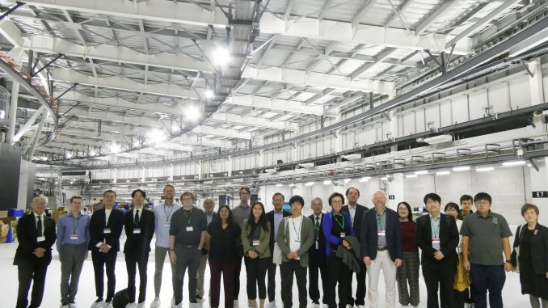

David D. Awschalom
University of Chicago
October 5–6, 2023 | Sendai, Japan
At a Glance
Workshop Photo

Speakers
University of Chicago
Tohoku University
Tohoku University
Tohoku University
University of Chicago
Tohoku University
Tohoku University
University of Chicago
University of Chicago
University of Chicago
University of Chicago
Tohoku University
Tohoku University
Tohoku University
Tohoku University
Tohoku University
Tohoku University
Tohoku University
Tohoku University
Tohoku University
Tohoku University
Tohoku University
University of Chicago
Program
| 09:00-09:10 | Opening | Hideo Ohno |
|---|---|---|
| 09:10-09:50 | Plenary | David D. Awschalom | Opportunities for Collaboration: Quantum Engineering with Semiconductors and Molecules |
| 10:00-10:30 | Molecule quantum physics | Giulia Galli | Quantum simulations for quantum technologies |
| 10:30-10:45 | Molecule quantum physics | Tadahiro Komeda | Single-molecule magnet combined with superconductor and RF wave for quantum process |
| 11:00-11:15 | Solid-state quantum theory & transport | Takashi Koretsune | Ab-initio effective Hamiltonian approach and its applications for material design |
| 11:15-11:30 | Solid-state quantum theory & transport | Tomoki Ozawa | Quantum engineering of topological phases with atoms and photons |
| 11:30-11:45 | Solid-state quantum theory & transport | Makoto Kohda | Helical spin states in semiconductor quantum structures |
| 11:45-13:00 | Lunch Session | Multipurpose Room, Graduate School of Science |
| 13:00-13:30 | Superconductor & mechanical quantum systems | Andrew N. Cleland | Recent progress in quantum acoustics |
| 13:30-13:45 | Superconductor & mechanical quantum systems | Taro Yamashita | Scalable superconducting flux qubits |
| 13:45-14:00 | Superconductor & mechanical quantum systems | Jana Lustikova | Spin injection into high temperature superconductors |
| 14:00-14:15 | Superconductor & mechanical quantum systems | Kentaro Totsu | Open access fabrication facility for MEMS and other nano/micro devices |
| 14:25-14:55 | Quantum spin defect & atomic impurity | Supratik Guha | Heterogeneous integration of materials for quantum application |
| 14:55-15:25 | Quantum spin defect & atomic impurity | F. Joseph Heremans | Designing optically addressable spin defects in the solid-state |
| 15:25-15:40 | Quantum spin defect & atomic impurity | Shun Kanai | Solid-state spin defect with oxides |
| 15:40-15:55 | Quantum spin defect & atomic impurity | Hiroki Morishita | Electrical detection of NV spins in diamond |
| 16:10-16:40 | Atomic layer quantum systems & ARPES | Shuolong Yang | Quantum stethoscope for layered topological materials |
| 16:40-16:55 | Atomic layer quantum systems & ARPES | Takafumi Sato | Micro-ARPES study of exotic 2D materials |
| 17:05-17:20 | Various computing | Hiroaki Kobayashi | QA-HPC hybrid-computing for simulation & data-analysis hybrid applications |
| 17:20-17:35 | Various computing | Shunsuke Fukami | Stochastic magnetic tunnel junction for probabilistic computing |
| 17:35-17:50 | Various computing | Johan Akerman | Spin wave based time-multiplexed Ising machines |
| 18:00-19:00 | Poster Session | Multipurpose Room, Graduate School of Science |
| 19:30-21:00 | Reception | Westin Sendai | Invited guests only |
| 09:00-09:30 | Lab Tour | Tetsuo Endoh | CIES (Center for Innovative Integrated Electronic Systems) |
|---|---|---|
| 09:45-10:15 | Art, science, and NanoTerasu | Nancy Kawalek | Cultivating public interest in quantum science through the arts |
| 10:15-10:40 | Art, science, and NanoTerasu | Masaki Takata | The NanoTerasu doctrine - Building a new range of innovation ecosystem |
| 11:00-11:40 | Lab Tour | Synchrotron radiation facility: NanoTerasu |
| 12:00-13:20 | Lunch | Aobayama Campus |
| 14:00-14:40 | Lab Tour | uSIC (Micro System Integrated Center) |
| 15:10-15:50 | Lab Tour | AIMR (Advanced Institute for Materials Research) |
Registration
Venue
Aoba Science Hall (Science Complex C, H04) 2nd floor
Graduate School of Science, Tohoku University
Aobayama Campus, Sendai, Japan
Contact